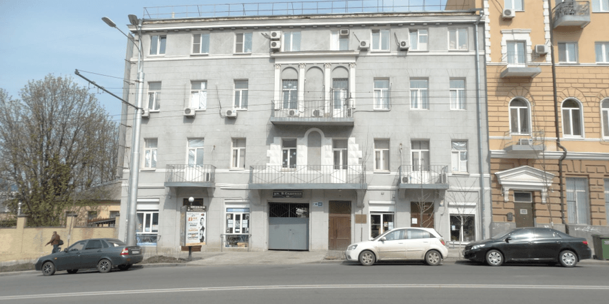

Донская государственная публичная библиотека

Центральная библиотека Ростовской области — старейшее книгохранилище юга России. Моментом основания считается 1886 год, когда по данным «Ведомостей Ростовской-на-Дону Городской Управы» была открыта Ростовская городская публичная библиотека.
На январь 2022 года фонды библиотеки включают около 5,5 миллионов печатных изданий на русском и иностранных языках. Ежедневная посещаемость библиотеки составляет около 1 000 человек, ежегодно читателям выдается около 2 миллионов документов.
Электронный каталог библиотеки включает записи на русском языке, иностранных языках, записи каталогов разных видов документов, а также каталогов Донской электронной библиотеки; содержит более 800 тысяч записей.
Библиотека — общественный и культурный центр области, ресурсный центр в системе поддержки муниципальных библиотек и центр непрерывного образования библиотечных специалистов.
Здесь проходят конференции, семинары, фестивали, форумы, персональные и коллективные выставки изобразительного искусства, прикладного мастерства, детского рисунка, фотовыставки, книжные выставки, творческие встречи, концерты; работают клубы, абонементы.
На январь 2022 года фонды библиотеки включают около 5,5 миллионов печатных изданий на русском и иностранных языках. Ежедневная посещаемость библиотеки составляет около 1 000 человек, ежегодно читателям выдается около 2 миллионов документов.
Электронный каталог библиотеки включает записи на русском языке, иностранных языках, записи каталогов разных видов документов, а также каталогов Донской электронной библиотеки; содержит более 800 тысяч записей.
Библиотека — общественный и культурный центр области, ресурсный центр в системе поддержки муниципальных библиотек и центр непрерывного образования библиотечных специалистов.
Здесь проходят конференции, семинары, фестивали, форумы, персональные и коллективные выставки изобразительного искусства, прикладного мастерства, детского рисунка, фотовыставки, книжные выставки, творческие встречи, концерты; работают клубы, абонементы.
Центральная городская библиотека имени М. Горького

Центральная городская библиотека им. М. Горького является административным, методическим, координационным центром для муниципальных библиотек города Ростова-на-Дону.
ЦГБ им. М. Горького успешно обеспечивает комплектование единого фонда ЦБС, координирует справочно-библиографическую работу библиотек-филиалов, осуществляет методическое руководство и автоматизацию библиотечных процессов, обслуживает пользователей.
В ЦГБ им. М. Горького для читателей работает абонемент, читальный зал, отдел литературы на иностранных языках, отдел музыкально-нотной литературы, отдел справочно-библиографической и информационной работы.
Универсальный фонд библиотеки насчитывает свыше 150 000 экземпляров книг и периодических изданий. Работают клубы и любительские объединения разных направлений.
Отличительным знаком ЦГБ им. М. Горького на протяжении всей ее истории являлась работа с титульным именем. Имя культового пролетарского писателя было присвоено центральной городской библиотеке при открытии в 1920 году.
ЦГБ им. М. Горького успешно обеспечивает комплектование единого фонда ЦБС, координирует справочно-библиографическую работу библиотек-филиалов, осуществляет методическое руководство и автоматизацию библиотечных процессов, обслуживает пользователей.
В ЦГБ им. М. Горького для читателей работает абонемент, читальный зал, отдел литературы на иностранных языках, отдел музыкально-нотной литературы, отдел справочно-библиографической и информационной работы.
Универсальный фонд библиотеки насчитывает свыше 150 000 экземпляров книг и периодических изданий. Работают клубы и любительские объединения разных направлений.
Отличительным знаком ЦГБ им. М. Горького на протяжении всей ее истории являлась работа с титульным именем. Имя культового пролетарского писателя было присвоено центральной городской библиотеке при открытии в 1920 году.
Ростовская областная детская библиотека им. В.М. Величкиной

Первая детская бесплатная библиотека-читальня была открыта в городе Ростове-на-Дону Обществом детских библиотек 12 июня 1914 года.
С 1920 году библиотека носит имя Веры Михайловны Величкиной — врача, литератора, государственного деятеля, защитника детства.
В 20-е годы года при библиотеке создаются различные кружки для детей-друзей книги. Один из самых ярких эпизодов в истории библиотеки — встреча её читателей с Аркадием Гайдаром.
В 1941 году при библиотеке организуется тимуровская команда, работа которой была направлена на оказание помощи фронту и укрепление тыла.
Во время оккупации города Ростова фашистами удалось сохранить книжный фонд. В 1954 году библиотеке был присвоен статус областной. С этого времени она не только обслуживает читателей, но является и методическим центром для библиотек области, работающих с детьми.
90-е годы отмечены в деятельности библиотеки инновационными подходами к организации библиотечной работы с детьми. В течение последних 20 лет библиотека успешно реализует областные проекты и акции.
Сегодня библиотека — самое большое в области собрание лучших книг, аудиовизуальных и электронных документов для детей.
С 1920 году библиотека носит имя Веры Михайловны Величкиной — врача, литератора, государственного деятеля, защитника детства.
В 20-е годы года при библиотеке создаются различные кружки для детей-друзей книги. Один из самых ярких эпизодов в истории библиотеки — встреча её читателей с Аркадием Гайдаром.
В 1941 году при библиотеке организуется тимуровская команда, работа которой была направлена на оказание помощи фронту и укрепление тыла.
Во время оккупации города Ростова фашистами удалось сохранить книжный фонд. В 1954 году библиотеке был присвоен статус областной. С этого времени она не только обслуживает читателей, но является и методическим центром для библиотек области, работающих с детьми.
90-е годы отмечены в деятельности библиотеки инновационными подходами к организации библиотечной работы с детьми. В течение последних 20 лет библиотека успешно реализует областные проекты и акции.
Сегодня библиотека — самое большое в области собрание лучших книг, аудиовизуальных и электронных документов для детей.
Библиотечно-информационный центр имени Ю.А. Гагарина г. Ростова-на-Дону

Библиотечно-информационный центр имени Ю.А. Гагарина был организован в 2000 году, является одной из крупных библиотек Ростовской централизованной библиотечной системы, значимым культурно–просветительским центром Ворошиловского района г. Ростова-на-Дону.
Большой популярностью среди читателей пользуются проводимые библиотекой кинолектории, посвященные духовно–нравственной проблематике и российской истории. В Библиотечно–информационном центре имени Ю.А. Гагарина организуются экспозиции творческих работ ростовских художников и талантливых читателей.
Библиотечно–информационный центр имени Ю.А. Гагарина принимает участие в городских социально значимых проектах, на протяжении ряда лет осуществляет библиотечное обслуживание жителей городского Дома ветеранов.
С 2011 года Библиотечно–информационный центр имени Ю.А. Гагарина работает по программе «Космос как притяжение», направленной на популяризацию истории и современных достижений отечественной космонавтики. Ведущим направлением программы является продвижение имени «первого гражданина Вселенной». В библиотеке действует мемориальная экспозиция «От первого полета — к будущим высотам», особое место в которой занимает материал о пребывании Ю.А. Гагарина на Донской земле.
Библиотечный мини-музей космонавтики пользуется популярностью среди читателей: ежегодно посещает около 1 тыс человек.
Объем универсального фонда составляет более 73 тыс. экземпляров книг, журналов и электронных носителей.
Большой популярностью среди читателей пользуются проводимые библиотекой кинолектории, посвященные духовно–нравственной проблематике и российской истории. В Библиотечно–информационном центре имени Ю.А. Гагарина организуются экспозиции творческих работ ростовских художников и талантливых читателей.
Библиотечно–информационный центр имени Ю.А. Гагарина принимает участие в городских социально значимых проектах, на протяжении ряда лет осуществляет библиотечное обслуживание жителей городского Дома ветеранов.
С 2011 года Библиотечно–информационный центр имени Ю.А. Гагарина работает по программе «Космос как притяжение», направленной на популяризацию истории и современных достижений отечественной космонавтики. Ведущим направлением программы является продвижение имени «первого гражданина Вселенной». В библиотеке действует мемориальная экспозиция «От первого полета — к будущим высотам», особое место в которой занимает материал о пребывании Ю.А. Гагарина на Донской земле.
Библиотечный мини-музей космонавтики пользуется популярностью среди читателей: ежегодно посещает около 1 тыс человек.
Объем универсального фонда составляет более 73 тыс. экземпляров книг, журналов и электронных носителей.